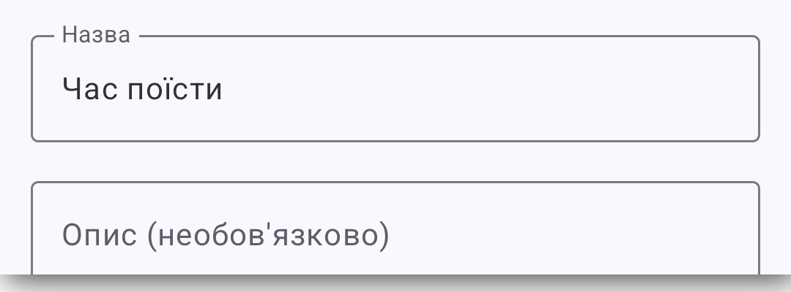
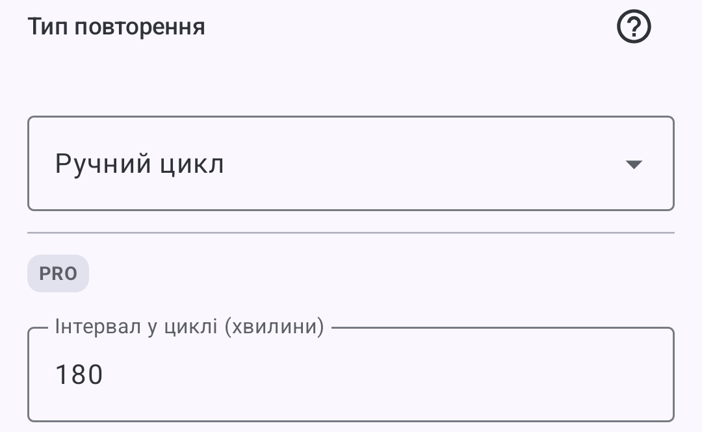
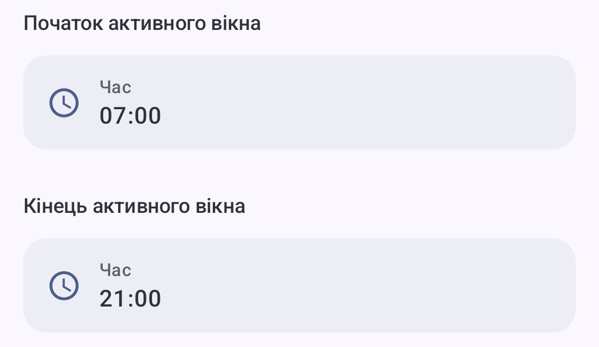
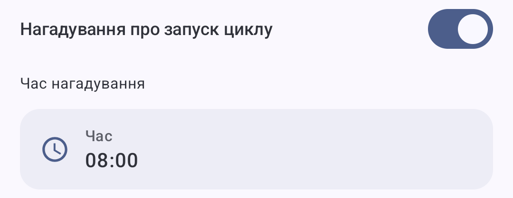

Практичний приклад
Нагадування про прийоми їжі протягом дня
ProНалаштуйте нагадування про прийоми їжі й починайте денну серію у зручний для вас час. DKReminder регулярно повідомлятиме, коли настане час наступного прийому їжі.
Для чого це
Регулярні нагадування, що починаються у ваш час
Визначте зручний для себе розпорядок та інтервал. Коли настає час першого прийому їжі, почніть денну серію. Наступного дня її можна почати в інший час — змінювати налаштування не потрібно.
Як налаштувати
Одне нагадування — чотири кроки
-
1
Назвіть його «Час поїсти»
Оберіть назву, яку одразу зрозумієте під час сигналу.

-
2
Оберіть «Ручний цикл» і вкажіть 180 хвилин
Цей режим чекатиме, доки ви почнете денну серію. Інтервал — демонстраційне значення, а не рекомендація.

-
3
Визначте період дня для нагадувань
У налаштуванні «Активне вікно» задайте 07:00–21:00. Наступні нагадування приходитимуть лише в цьому проміжку.

-
4
Увімкніть нагадування про початок на 08:00
DKReminder беззвучно нагадає про початок. Коли настає час першого прийому їжі, натисніть Почати; якщо ще ні — Нагадати пізніше. Наступні нагадування приходитимуть через обраний інтервал.

Натисніть «Почати», щоб запустити цикл нагадувань на сьогодні
Як це працюватиме
Те саме правило може починатися в різний час
Обидва дні використовують однакові демонстраційні налаштування: інтервал 180 хвилин і завершення активного вікна о 21:00.
День 1 · Старт о 08:15
- 08:15Старт
- 11:15Сигнал
- 14:15Сигнал
- 17:15Сигнал
- 20:15Сигнал
День 2 · Старт о 10:00
- 10:00Старт
- 13:00Сигнал
- 16:00Сигнал
- 19:00Сигнал
- 22:00Поза вікном
Очікувана поведінка
Що зробить DKReminder
Беззвучне повідомлення запропонує Почати або Нагадати пізніше. Денна серія розпочнеться лише після Почати.
Перший сигнал з’явиться після обраного інтервалу, а не в момент натискання «Почати».
Нові планові сигнали припиняться, коли наступний час вийде за межі активного вікна.
Наступного дня ви самі запускаєте новий денний цикл у потрібний момент.
Що важливо знати
Ручний цикл — Pro-функція DKReminder. Застосунок допомагає дотримуватися вже обраного розпорядку, але не радить, як часто їсти, і не обіцяє змін здоров’я або ваги.
Прочитати, як працює ручний цикл у HelpНалаштуйте нагадування під власний розпорядок.
Оберіть свої значення — DKReminder стежитиме за часом наступного сигналу.